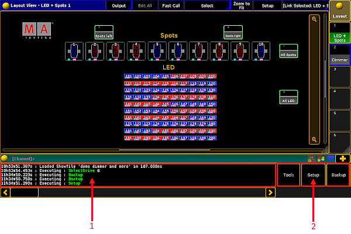

Screen Layout
If you run Mode2 on a grandMA3 console, the screen layout differs from the layout in a grandMA2 console.
Screen 1
Screen 1 corresponds to screen 2 on a grandMA2 console.

Screen layout of screen 1
Command line feedback – displays the history of commands at a glance.Tools , Setup , Backup – allow fast access on the grandMA3 console.
The upper section – user-defined area and the command line – of screen 2 and the view buttons stay the same.
Tools, Setup and Backup are also displayed in the Setup Menu. To access the Setup Menu on the grandMA3 console, press Menu .
For more information on the upper screen see Screen Layout – Screen 2 .
Screen 2
Screen 2 corresponds to screen 3 on a grandMA2 console.
Screen layout of screen 2
Macros Buttons – allow fast access on the grandMA3 console. Channel Page (+/-) – tap to execute the ChannelPage Keyword. Fader Page (+/-) – tap to execute the FaderPage Keyword. Button Page (+/-) – tap to execute the ButtonPage Keyword.
Hint:
It is possible to disable the macro buttons on screen 2 and 3. For more information see
Setup .
Hint:
It is possible to execute FaderPage and ButtonPage in Mode2 using buttons of the grandMA3 console:
-To execute the FaderPage keyword, press
Pg+ or
Pg- .
-To execute the ButtonPage keyword, press and hold
and press
Pg+ or
Pg- .
- User-Defined Area
- View Buttons
For more information on the upper screen see Screen Layout – Screen 3 .
Screen 3
Screen 3 corresponds to screen 4 on a gandMA2 console.
Screen layout of screen 3
Macro Buttons – for more information see the macro buttons in screen 2 .
The upper section stays the same as in screen 2
Screen 4 and screen 5 (external screens)
Important:
Screens 4 and 5 are screens 5 and 6 on a grandMA2 console.
Screen layout of screens 4 and 5
Screen 4 and 5 stay the same as in the grandMA2 console.
For more information on theses screens see Screen Layout – Screen 5 and Screen 6 .
Screen 6 – Right Command Screen
The Right Command Screen displays the familiar command section of a grandMA2 console.
Screen layout of screen 6
To toggle the screen to the trackpad, tap Trackpad .
The trackpad opens.
Toggle screen to trackpad
The trackpad has the same functions as the trackball on a grandMA2 console.
For more information on the usage of a trackball see Single User and Multi User Systems – User Settings .
Screen 7 – Left Command Screen
Screen 6 corresponds to screen 1 on a grandMA2 console.
Screen layout of screen 7
For more information on the areas of the left command screen follow the links below:
X-Key Labels Command Line User Defined Area
Important:
Screen 8 (Letterbox Encoder Screen)
Important:
Screen 8 or letterbox encoder screen is located below screen 1 and functions as its extension.
Screen layout of screen 8
Network – displays the devices that are currently in a session at a glance.Encoder Bar – displays the preset control bar and the encoder toolbar. Time Control – displays program time and exec time. Grand Master – is displayed as a virtual fader.B.O. – executes the Blackout keyword.
Screen 9 (Right Letterbox Executor Screen)
Screen 9 or right letterbox executor screen is located below screen 2 and functions as its extension.
Screen layout of screen 9
Executors on screen – screen 9 displays executors 16 to 30. Master Section – is displayed on the right of the screen 9.
Screen 10 (Left Letterbox Executor Screen)
Screen 10 or left letterbox executor screen is located below screen 3 and functions as its extension.
Screen layout of screen 10
Executors on screen – screen 10 displays executors 1 to 15. Time Control – controls Program Time and Exec Time.
Important: Custom Section .
Requirement:
Program Time:
To operate the on-screen fader of the Program Time, move Wheel 1.
To activate Manual X-Fade, press Wheel 1 Upper Button.
To activate Set Time, press Wheel 1 Lower Button.
Exec Time:
To operate the on-screen fader of the Exec Time, move Wheel 2.
To activate Manual X-Fade, press Wheel 2 Upper Button
To activate Set Time, press Wheel 2 Lower Button.
For more information on the Custom Section see Device Overview in the grandMA3 manual.
 and press Pg+ or Pg-.
and press Pg+ or Pg-.